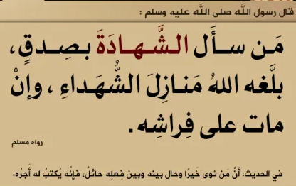

عنوان
الشهادة هي شهادة أن لا إله إلا الله وأن محمداً رسول الله هي الركن الأول مؤلف من أمرين: الشهادة لله بالوحدانية والإلهية، والشهادة لنبيه محمد صلى الله عليه وسلم بالرسالة، فلابد منهما، وكل عمل لابد من أن يكون مستنداً إليهما.فالشهادتان هما أساس في ذاتيهما، وهما أساس لبقية الأركان ولكل عمل يتقرب به إلى الله سبحانه وتعالى، وإذا لم يكن العمل مبنياً على الشهادتين فإنه يكون مردوداً على صاحبه وغير مقبول، ولا ينفع صاحبه عند الله عز وجل. فهما أس الأسس، وهما اللتان يبنى عليهما غيرهما من بقية الأركان، وكل الأعمال التي يتقرب بها إلى الله سبحانه وتعالى.
